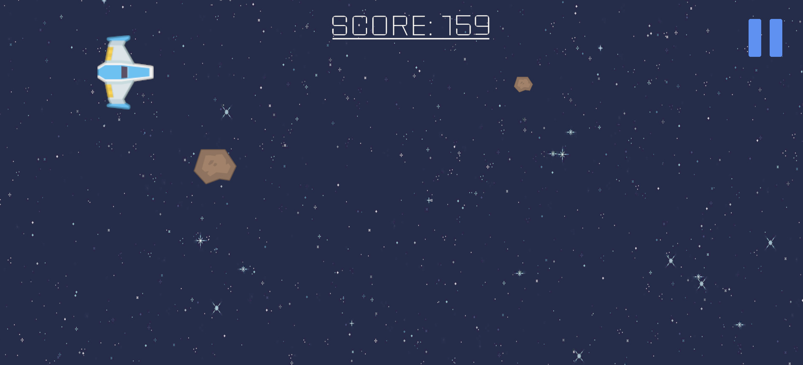

Working in the Creative Industries: Is Freelancing the Road to Success?
My thoughts on freelance work, independent game development, and building a sustainable creative career.
Introduction
When thinking about a career in game development, I often imagine working alongside other developers in a studio, contributing to projects and eventually seeing a finished game released to the public. However, working for an established company is not the only way to enter the creative industries. Freelancing and independent game development provide alternative career paths that I personally find quite appealing.
One of the things that interests me most about game development is the opportunity to create something from an idea and gradually turn it into a playable experience. Being able to make my own decisions about a project, experiment with mechanics and develop games that reflect my interests is something I would enjoy.
However, I also recognise that working independently is not necessarily as straightforward as it might initially appear. Although freelancing offers freedom and flexibility, it also introduces responsibilities that would normally be handled by an employer.
This raises an interesting question: is freelancing genuinely a road to success in the creative industries, or does it create more challenges than opportunities?
Personally, I believe freelancing can be an excellent career choice, but only for someone who understands the risks and is prepared to manage both the creative and business aspects of their work.
What Does It Mean to Be a Freelancer?
A freelancer is someone who works independently, typically providing services to different clients rather than working permanently for one employer.
Within the creative industries, freelancers might provide programming, animation, graphic design, audio production, website development or other specialist services.
For example, a freelance programmer could be hired by a game studio to develop a particular gameplay system, while a freelance artist might create character sprites or environmental artwork.
I think one of the biggest attractions of freelancing is the ability to choose which projects to pursue. Rather than being assigned work by an employer, freelancers have more control over the clients they approach and the services they offer.
However, I think it is important to distinguish freelancing from independent game development.
Although the two can overlap, an indie developer is not necessarily a freelancer. An independent developer might create and publish their own game, while a freelancer typically provides services to clients in exchange for payment.
Someone could also combine both approaches by completing freelance contracts to generate income while developing their own games.
This is a career path I find particularly interesting because it could provide opportunities to gain professional experience while continuing to work on personal projects.
The International Game Developers Association's Developer Satisfaction Survey demonstrates that the games industry includes permanent employees, self-employed developers and freelance contractors. I think this highlights that there is no single career structure that works for everyone.
The Skills Required to Become a Successful Freelancer
One thing I have realised while researching freelancing is that technical ability alone is unlikely to guarantee success.
Being able to develop an impressive game or website is useful, but a freelancer also needs to communicate with clients, manage deadlines, organise finances and promote their services.
Personally, I believe communication is one of the most important skills.
If I were working with a client who wanted a particular feature implemented, I would need to understand exactly what they expected before beginning development.
For example, if someone requested a multiplayer system for their game, I would need to establish what kind of multiplayer experience they wanted, which platforms were being targeted and how much time and money they were prepared to invest.
Without clear communication, I could spend considerable time developing something that does not meet their expectations.
Time management is another essential skill. Freelancers often have to organise their own schedules, meaning there may not be a manager reminding them about upcoming deadlines.
From my experience working on university projects, I understand how useful planning and breaking larger tasks into smaller objectives can be.
I believe this would become even more important when working with paying clients, particularly if several projects were being developed simultaneously.
Other important abilities include problem-solving, adaptability, financial management and the willingness to continue learning new technologies.
I also think freelancers need to understand their own limitations. Accepting work that is beyond my current abilities simply because it offers a good payment could damage my reputation if I am unable to deliver.
The Benefits of Freelancing
The biggest advantage of freelancing, in my opinion, is flexibility.
Being able to choose the projects I work on and potentially organise my own working hours is an attractive prospect.
I also like the idea of having greater creative control. Within a larger company, development decisions may be influenced by management, publishers, budgets and established production processes.
As an independent developer, I could potentially experiment with ideas that might not be considered commercially attractive by a major studio.
For example, I enjoy creating smaller games that focus on straightforward mechanics. Projects such as Galactic Escape, my mobile endless runner developed in Unity, demonstrate how a relatively simple concept can provide opportunities to experiment with gameplay systems.
Although a project like this is very different from developing a commercial game, I think it represents the kind of experimentation that makes independent development appealing to me.
Another benefit is the opportunity to develop a wider range of skills.
A freelancer might be responsible for communicating with clients, designing features, programming, testing and delivering the final product.
While this could be challenging, I believe it would also encourage personal development.
Freelancing could also provide experience working with different people and technologies, which might eventually help someone establish a stronger professional portfolio.

The Challenges and Drawbacks of Freelancing
Despite these advantages, I don't believe freelancing should be viewed as an easy alternative to traditional employment.
One of the biggest concerns is financial uncertainty.
A permanent employee will generally have an agreed salary, while a freelancer's income depends on securing contracts and receiving payment for completed work.
There could be periods where work is readily available, followed by periods where finding new clients becomes difficult.
I think this uncertainty would be particularly challenging for someone just beginning their career, especially if they do not have savings or an established client base.
Freelancers must also account for expenses such as software subscriptions, equipment, insurance and taxes.
Another issue is the potential for excessive working hours.
When working independently, it might be tempting to accept every available opportunity, particularly when concerned about future income.
However, this could lead to unrealistic workloads and eventually burnout.
The IGDA Developer Satisfaction Survey examines working conditions and career satisfaction across the games industry, including experiences relating to working hours and employment arrangements.
I think it is important to recognise that having control over your schedule does not automatically guarantee a healthy work-life balance.
Freelancing can also be isolating. Although remote collaboration is possible, working independently may mean missing some of the social interaction and immediate support available within a studio.
Personally, I enjoy the idea of working independently, but I would still want opportunities to collaborate with other developers and learn from their experiences.
Freelancing Compared with AAA Game Development
Another important consideration is the difference between working independently and joining a large AAA game development studio.
AAA studios typically employ teams of specialists, with individuals focusing on areas such as gameplay programming, artificial intelligence, animation, technical art or level design.
I think this environment could be extremely valuable for someone who wants to develop expertise in a particular discipline.
Working alongside experienced developers could also provide opportunities to learn established production practices and understand how large commercial games are created.
However, I imagine there would be less opportunity to influence every aspect of a project.
An independent developer or smaller studio may have greater freedom to make creative decisions, but would also have fewer resources.
For example, a small team might need one developer to handle several responsibilities, while a AAA studio could have entire departments dedicated to those same tasks.
I don't necessarily believe one approach is better than the other.
Large studios can offer structured development environments and specialist experience, while independent development offers flexibility and opportunities for creative ownership.
Personally, I would be interested in experiencing both environments throughout my career.
I think gaining experience within an established studio could help me develop the skills and confidence needed to pursue independent projects more seriously.
Promoting Myself as a Freelancer
If I decided to pursue freelancing, I believe establishing a professional online presence would be one of my first priorities.
This connects closely to my previous blog article about creating a good online presence.
I already have a personal portfolio website that showcases my game development projects and technical skills.
I would continue developing this website by including examples of completed work, explanations of the technologies used and clear information about the services I could provide.
I would also use GitHub to demonstrate programming abilities and LinkedIn to establish professional connections.
For independent game releases, I would consider platforms such as itch.io.
The official itch.io creator documentation explains how developers can publish games, customise project pages and provide downloadable content.
I think this would be useful for building an audience and allowing people to experience my work directly.
However, I don't believe simply creating profiles would be enough.
I would also need to engage with communities, share meaningful development updates and build relationships with other professionals.
Reputation, Professionalism and Working with Clients
I believe reputation is especially important for freelancers because future opportunities may depend on recommendations and repeat business.
If a client has a positive experience working with someone, they may be more likely to recommend that developer to others.
On the other hand, poor communication, missed deadlines or unfinished work could seriously damage someone's professional reputation.
For this reason, I think freelancers should establish clear expectations before beginning a project.
This includes agreeing on the work being delivered, payment arrangements, deadlines and how changes to the project will be handled.
Another important consideration is intellectual property.
According to the UK Intellectual Property Office's guidance on copyright ownership, freelancers and independent contractors will usually retain copyright in work they create unless an agreement states otherwise.
I think this demonstrates why written contracts are important.
Both the freelancer and the client should understand who owns the finished work and what rights each party has to use it.
Personally, I would rather spend additional time establishing clear agreements than risk disagreements later.
How Would I Establish My Own Business?
If I eventually decided to work independently, I would start by identifying the services I could realistically offer.
For example, I might initially focus on smaller programming tasks, game prototypes or website development rather than attempting to create large commercial projects immediately.
I would also want to develop a portfolio containing relevant examples and establish a realistic pricing structure.
Another consideration would be the legal structure of the business.
In the UK, the government provides guidance on becoming a sole trader, including registering for Self Assessment when required, keeping financial records and understanding tax responsibilities.
Alternatively, someone could establish a limited company, although this introduces different administrative and legal requirements.
I think it would be sensible to research these options carefully and seek appropriate professional advice before committing to a particular structure.
I would also consider creating a business plan that outlines my intended services, target clients, expected expenses and financial goals.
Most importantly, I would avoid assuming that success would happen immediately.
Building a sustainable business takes time, and I think beginning with manageable projects would be a more realistic approach than attempting to compete with established studios from the beginning.
My Advice to Aspiring Freelancers
If I were advising another game development student interested in freelancing, my first suggestion would be to develop a strong portfolio before actively pursuing paid work.
Potential clients need evidence that someone can deliver the services they are offering.
I would also recommend learning the basics of contracts, budgeting and project management, even if these subjects initially seem less interesting than programming or game design.
Another important piece of advice would be to avoid accepting every available opportunity.
I think understanding your abilities and setting realistic expectations is more valuable than agreeing to work that cannot be completed properly.
Finally, I would encourage students to continue developing personal projects.
Even if freelancing becomes their primary source of income, independent projects can provide opportunities to experiment, learn new skills and demonstrate creativity.
Conclusion
Overall, I believe freelancing can provide an exciting route into the creative industries, particularly for developers who value independence and creative freedom.
The opportunity to choose projects, develop different skills and potentially establish my own business is something that genuinely interests me.
However, I also recognise that freelancing introduces considerable challenges, including inconsistent income, financial responsibilities, client management and the pressure of maintaining a steady workload.
For this reason, I don't think freelancing should automatically be considered a better option than working for an established studio.
Personally, I would like to gain more development experience, continue improving my portfolio and explore independent opportunities as my skills progress.
I can see myself being interested in developing my own games or providing freelance services in the future, but I would want to approach this gradually rather than immediately relying on it as my only source of income.
Ultimately, I believe freelancing can be a road to success, but success depends on more than simply being creative or technically capable.
It requires professionalism, business knowledge, determination and the ability to adapt when things do not go according to plan.
For me, that combination of creative freedom and personal responsibility is what makes independent development both exciting and challenging.
References
- International Game Developers Association (IGDA) — Developer Satisfaction Survey. Research into employment arrangements, working conditions and career satisfaction within the games industry.
- International Game Developers Association (IGDA) — Developer Satisfaction Survey Summary Report. Industry survey findings covering employment status, self-employment, freelance work and working conditions.
- UK Government — HM Revenue & Customs — Become a Sole Trader. Official guidance on self-employment, registration, financial records and tax responsibilities.
- UK Government — Business Support — Setting Up as a Formal Business. Guidance on business structures, registration and managing finances.
- UK Intellectual Property Office — Ownership of Copyright Works. Information on copyright ownership, commissioned work and contractual arrangements for freelancers.
- itch.io — Your First itch.io Page. Guidance on publishing and presenting independently developed games.
- Matthew Peacock — Personal Portfolio. Examples of game development and programming projects.
- Matthew Peacock — GitHub Profile. Programming repositories and development work.